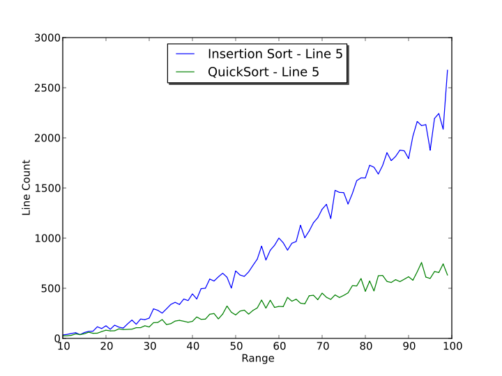
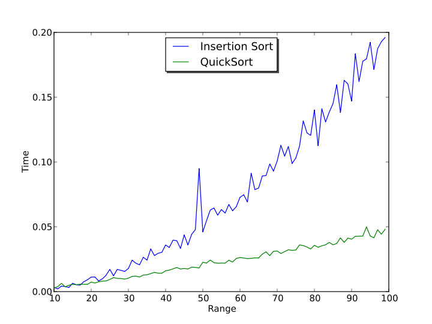
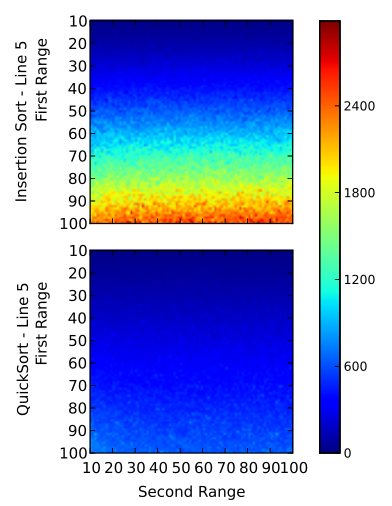
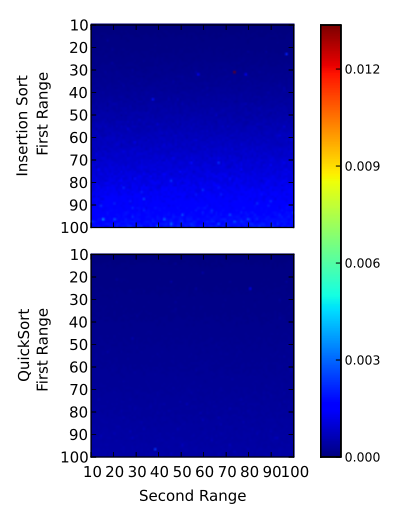

Section 3. Benchmarking Tool
3.1. Overview
You can start the Benchmarking Tool by selecting the Tool -> Benchmarking menu item. You will see a new window like the one in fig.1.
Fig.1. The Benchmarking Tool on top of the Main Window.
The Benchmarking Tool allows you to select items from the list of
algorithms available in the Algorithm Library and make some
benchmarking. You can compare between the algorithms' running time, and
you can observe how the number of times a line in the code gets
executed changes based on different values for some parameter.
For example, you may want to see how the line counts change for
different values of a list length, in the case of comparing two list
sorting algorithms. You may also want to see how the running time
varies based on the length of the list that is to be sorted.

Fig.2. Examples of benchmarking results using the Benchmarking Tool on
two sorting algorithms, Quick Sort and Insertion Sort, on 90 lists with
lengths from 10 to 100. Leftmost image: line counts benchmarking;
rightmost image: execution time benchmarking.
Sometimes, you might want to obtain such a benchmarking for more than
one argument varying in value. For example, you might want to vary both
the number of edges and number of vertices in a graph. The Benchmarking
Tool provides such an option, and the results will be heatmaps instead
of 2-dimensional plots (as obtained in the images above). You can learn
how to produce both types of images in the next section.
3.2. Step-by-step walkthrough
Producing a benchmarking suite for your algorithms is quite an easy
process. The Benchmarking Tool allows you to benchmark your own
algorithms in just a few minutes and you have to go through only three
steps to obtain your results.
You can start by clicking the Next
button on the first page of the Benchmarking Tool which shows the
welcoming message. You can navigate between the pages of the
Benchmarking Tool by using the Back and Next buttons available at each step.
Step 1: Selecting the algorithm(s)
The first step is to select one or more algorithms from the Algorithm
Library. Note that you can compare only between algorithms
that have the same types of arguments, given in the same order.
Comparing between two sorting algorithms that take a List type as an
arguments makes sense for the application, while comparing between a
sorting algorithm and a tree traversal algorithms does not.
Step 2: Selecting the lines for the line counts benchmarking
For all algorithms selected in previous step, you will now select at
least one line per algorithm that should be used in line counts
benchmarking. The choice for line selection should be based on what you
have observed in the analysis performed in the Main Window, i.e. for
example, which is the line defining best the complexity of the
considered algorithm.
You can select more than one line per algorithm if you want, by using the Ctrl key.
Step 3: Selecting a range
Next step is to select the argument(s) whose values will vary during
benchmarking and give values to those whose values will remain fixed
during this process. These arguments are not the arguments you actually
give to the algorithm, but rather the arguments the random generators
for the algorithm's arguments take (This is where the generateRandom<Datastructurename>
method for each data structure comes into play - discussed in section
'Adding a new data structure' - as the random generators arguments are
actually the arguments taken by these methods).
In this example, the two list sorting algorithms selected for
comparison take a List type argument, and the random generator for this
type (List) takes three arguments: length of the list to be generated,
the minimum value for its elements, and the maximum value for its
elements. You could select any of these three arguments as the argument
whose value should vary. The rest of the arguments will remain fixed
during the benchmarking process. And although the arguments usually
have default values, you might want to change them corresponding to
your own requirements.
You can give value ranges for at least one and at most two arguments
(remember, arguments of the data generators corresponding to the
algorithms' arguments). The second range is not by default visible and
if you want to add it, you will have to click on the + button right
next to the first range (you can reverse this action by clicking the -
button next to the second range). For one range, the results will be
images with two-dimensional plots, while with two ranges you will
obtain heatmaps. See also section 'Interpreting benchmark results'.
Your choice for the argument whose values will change will influence
the benchmarking results and their meaning. For a list sorting
algorithm, for example, the length of the list would be a very good
choice for the ranging argument, while changes in the maximum value of
list elements will not produce a significant variation in the benchmark
result.
Note! The time it takes to
produce the benchmark results is dependent on the range of values you
select at this step. Thus, you might want to try a smaller range at
first, and then play around with bigger numbers.
Note! The time it takes to
produce the benchmark results is also dependent on the number of
executions of each algorithm while benchmarking. You can edit this
number through the menu, by selecting the Options -> Preferences -> Benchmark Wizard -> Number executions
menu item. The default is value 1. However, the accuracy of the
execution time benchmarking is dependent on this number, and thus, to
obtain more accurate results, you would want to use a bigger number,
say 100. See also section 'Introduction' talking on the tools used in
this application.
Getting the results
After clicking the Next button
in the previous step, the final page of the Benchmarking Tool will
appear and a progress bar will show the progress of the process
producing the benchmark results. You might have to wait a while,
depending on the parameters selected for benchmarking (number of
algorithms, number of ranges, values of ranges, number of executions,
and so on).
The two benchmarking images will be placed in a tab each. You might
want to make this window bigger at this step, so that you can analyze
the results in more detail. There is also the option of saving both
images in a directory you specify. If the results are important, you
are recommended to save them, as these will no longer be available when
you are going to perform a different benchmarking suite with this tool.
See also the next section, on interpreting the benchmark results.
3.3. Interpreting benchmark results
The last image in the previous section contained the line counts
benchmarking result for the two list sorting algorithms, several times
mentioned throughout this chapter: Insertion Sort and Quick Sort. Line
5 was selected for both of the algorithms. The benchmarking was done on
two ranges: list length and maximum value, both arguments taking values
between 10 and 100, thus producing the heatmaps depicted below.

What you can immediately observe from these two heatmaps, each
corresponding to an algorithm, is that, as the length of the list
increases (the vertical 'First range' axis), the line counts increase.
However, there is a major difference between the two heatmaps. As the
length increases, the values of the line counts for the Insertion Sort
algorithm increase at a higher rate than for the Quick Sort algorithm.
In what concerns the second range, the maximum value for the list
elements, no significant differences can be observed along the
horizontal 'Second Range' axis. Thus, it would probably make more
sense, for this two algorithms, to use only one ranged argument, and
that is the list length. The result is the following plot, and you can
see that the same observation as from the previous image is preserved.
However, both of these images represent line counts benchmarking. The
next two images are the corresponding results for execution time
benchmarking. The number of execution times (that can be set through
the Options -> Preferences -> Benchmark Wizard -> Number executions menu item) had value 1.

With a small value for the number of executions the actual time is
harder to approximate than with a bigger number, and you may obtain
unwanted 'spikes' in the results. To overcome this, you can use a
larger value for the number of executions parameter.